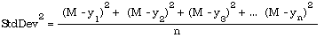
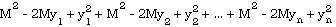
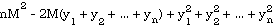
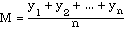
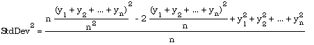
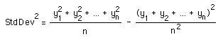
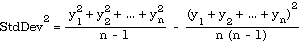
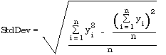

One of the most common applications of computing machinery is that of the analysis of data. It is often the case that a researcher is faced with large amounts of data describing the results of experiments. In order to make sense of this, certain standard tools are often applied, and in this section, two of the simplest are considered. The first of these is the mean or ordinary average:
The mean of a group of data is their sum divided by the number of items in the group.
Besides the mean itself, one often wants to know something about how closely clustered are the data points. For instance the mean of the data
13,14,13,15,16,13,15,16,14,15,14,14,13,12,13
is 14 and so is the mean of the data
1,1,1,1,1,1,1,1,1,1,1,1,1,1,196
yet these two data sets are very different, and there has to be a way to measure that difference.
One way of expressing the scattering of data from the mean is given by the standard deviation. It is found by taking the difference between the mean and each data item, squaring this number and adding all these squares. One then divides by the number of items and takes the square root of the final result.

where M is the mean. That is, the standard deviation is the square root of the expression on the right.
NOTES: The expression above is used only when the standard deviation is computed on the entire population (all possible data.) If the statistics are gathered on a sample of the population, the denominator is changed to n - 1.
The quantity (standard deviation)2 is called the variance of the data.
To construct a satisfactory Modula-2 routine for computing standard deviation, note that if the numerator of the above expression is expanded, one gets:

or

Substituting the formula for the mean, namely

yields

or

In the case of a sample population, the n in the main denominator becomes n - 1 and this formula is

If a summation notation is employed, these two are written:

Whichever of these (whole population or sample) is needed, this form is much easier to work with than the original definition, because the algorithm can operate by storing running totals of numbers as they are read or entered and also storing (separately) the running sum of their squares. The standard deviation can be determined at any point for the data entered thus far, or after all items have been entered, for the division by n or by n - 1 can be done at any time.
One could even decide to save storage space by not storing all the data items in an array as they are examined, but instead keeping track only of the two running totals and the number of items. While this suggestion is not in fact adopted in the code that follows, it could be an important one if the number of data entries in some disk file were very large and the amount of available memory comparatively small.
To obtain maximum flexibility, the statistical functions have been divided into two library modules, one a low level module whose only purpose is to accumulate the running number of items, sum, and sum of squares as data is fed to it, and to report the three statistical measures when desired. The second, higher level module drives the lower level one and does the computations of mean and standard deviation using results obtained from it.
DEFINITION MODULE LowStats;
(* Library of commonly used low level statistical functions
design by R. Sutcliffe & portions of implementation by Mark Harder
last revision 1993 04 06 *)
PROCEDURE Reset ();
(* Use this procedure before starting to call accumulating variables for a new calculation
Pre: none
Post: the number of items, sum, and sum of squares are all set to zero. Max is set to MIN (REAL) and min is set to MAX (REAL)
NOTE: The initialization code of the module calls Reset. *)
PROCEDURE Enter (x : REAL);
(* Pre: If this is the first call of this procedure for a new set of data, Reset must be called first.
Post: the number of items, running sum and running sum of squares are updated *)
PROCEDURE Size () : CARDINAL;
(* Pre: none
Post: returns the number of items accumulated since the last call to Reset. *)
PROCEDURE Sum () : REAL;
(* Pre: none
Post: returns the sum of the items accumulated since the last call to Reset. *)
PROCEDURE SumSquares () : REAL;
(* Pre: none
Post: returns the sum of the squares of the items accumulated since the last call to Reset. *)
PROCEDURE Max () : REAL;
(* Pre: none
Post: returns the largest of the items accumulated since the last call to Reset. *)
PROCEDURE Min () : REAL;
(* Pre: none
Post: returns the smallest of the items accumulated since the last call to Reset. *)
END LowStats.
IMPLEMENTATION MODULE LowStats;
(* Library of commonly used low level statistical functions
design by R. Sutcliffe & portions of implementation by Mark Harder
last revision 1993 04 06 *)
VAR
count : CARDINAL;
sum, sumSq, max, min : REAL;
PROCEDURE Reset ();
BEGIN
count := 0;
sum := 0.0;
sumSq := 0.0;
max := MIN (REAL);
min := MAX (REAL);
END Reset;
PROCEDURE Enter (x : REAL);
BEGIN
INC (count);
sum := sum + x;
sumSq := sumSq + x * x;
IF x > max
THEN
max := x
END;
IF x < min
THEN
min := x
END;
END Enter;
PROCEDURE Size () : CARDINAL;
BEGIN
RETURN count;
END Size;
PROCEDURE Sum () : REAL;
BEGIN
RETURN sum;
END Sum;
PROCEDURE SumSquares () : REAL;
BEGIN
RETURN sumSq;
END SumSquares;
PROCEDURE Max () : REAL;
BEGIN
RETURN max;
END Max;
PROCEDURE Min () : REAL;
BEGIN
RETURN min;
END Min;
BEGIN (* initialization code *)
Reset;
END LowStats.
Observe that no error handling has been done. There could be problems if the real type is overflowed, for example. In the exercises, the reader is asked to remedy this oversight. In the higher level module that follows, there is some redundancy, for the procedures Largest and Smallest return results that could be obtained by calling the lower level module directly. However, there are other possible higher end modules that could be written here; not all of them might need the maximum and minimum items.
DEFINITION MODULE Stats;
(* Library of commonly used statistical functions
design by R. Sutcliffe & portions of implementation by Mark Harder
last revision 1993 04 06 *)
PROCEDURE EnterData (items : ARRAY OF REAL;
numItems : CARDINAL);
(* Pre: the items in use are numbered 0 .. numItems - 1
Post: data is ready for analysis with statistical functions below *)
PROCEDURE Largest () : REAL;
(* Pre: none
Post: The highest value in the last array submitted with EnterData is returned *)
PROCEDURE Smallest () : REAL;
(* Pre: none
Post: The lowest value in the last array submitted with EnterData is returned *)
PROCEDURE Mean() : REAL;
(* Pre: none
Post: The mean of all the values in the last array submitted with EnterData is returned *)
PROCEDURE VariancePop () : REAL;
(* Pre: none
Post: The population variance of all the values in the last array submitted with EnterData is returned *)
PROCEDURE VarianceSamp () : REAL;
(* Pre: none
Post: The sample variance of all the values in the last array submitted with EnterData is returned *)
PROCEDURE StdDevPop () : REAL;
(* Pre: none
Post: The population standard deviation of all the values in the last array submitted with EnterData is returned *)
PROCEDURE StdDevSamp () : REAL;
(* Pre: none
Post: The sample standard deviation of all the values in the last array submitted with EnterData is returned *)
END Stats.
IMPLEMENTATION MODULE Stats;
(* Library of commonly used statistical functions
design by R. Sutcliffe & portions of implementation by Mark Harder
last revision 1993 04 06 *)
FROM LowStats IMPORT
Reset, Enter, Size, Sum, SumSquares, Max, Min;
FROM RealMath IMPORT
sqrt;
PROCEDURE EnterData (items : ARRAY OF REAL; numItems : CARDINAL);
VAR
count : CARDINAL;
BEGIN
Reset;
FOR count := 0 TO numItems - 1
DO
Enter (items [count]);
END;
END EnterData;
PROCEDURE Largest () : REAL;
BEGIN
RETURN Max();
END Largest;
PROCEDURE Smallest () : REAL;
BEGIN
RETURN Min();
END Smallest;
PROCEDURE Mean () : REAL;
BEGIN
RETURN Sum() / FLOAT (Size());
END Mean;
PROCEDURE VariancePop () : REAL;
VAR
size : REAL;
BEGIN
size := FLOAT ( Size ());
RETURN (SumSquares () - (( Sum() * Sum()) / size)) / size;
END VariancePop;
PROCEDURE VarianceSamp () : REAL;
VAR
size : REAL;
BEGIN
size := FLOAT ( Size ());
RETURN (SumSquares () - (( Sum() * Sum()) / size)) / (size - 1.0);
END VarianceSamp;
PROCEDURE StdDevPop () : REAL;
BEGIN
RETURN sqrt (VariancePop ());
END StdDevPop;
PROCEDURE StdDevSamp () : REAL;
BEGIN
RETURN sqrt (VarianceSamp ());
END StdDevSamp;
END Stats.
Notice how the work has been distributed so that most of the procedures have only a line or two of code. This makes easier to debug than it would be otherwise. In fact, when the test program below was compiled and run, the only errors found were in the client. The library modules needed no corrections after the initial compilation; all their functions worked correctly the first time.
MODULE TestStats;
(* by R. Sutcliffe
to test the statistics modules
last revision 1993 04 06 *)
FROM Stats IMPORT
EnterData, Largest, Smallest, Mean, VariancePop, VarianceSamp,
StdDevPop, StdDevSamp;
FROM SRealIO IMPORT
ReadReal, WriteFixed;
FROM STextIO IMPORT
WriteString, WriteLn;
FROM SWholeIO IMPORT
WriteCard;
FROM RedirStdIO (* non-standard *) IMPORT
OpenOutput, CloseOutput;
PROCEDURE WriteStats;
BEGIN
WriteString ("largest is ");
WriteFixed (Largest (), 2, 0);
WriteLn;
WriteString ("smallest is ");
WriteFixed (Smallest (), 2, 0);
WriteLn;
WriteString ("mean is ");
WriteFixed (Mean (), 2, 0);
WriteLn;
WriteString ("population variance is ");
WriteFixed (VariancePop (), 2, 0);
WriteLn;
WriteString ("sample variance is ");
WriteFixed (VarianceSamp (), 2, 0);
WriteLn;
WriteString ("population standard deviation is ");
WriteFixed (StdDevPop (), 2, 0);
WriteLn;
WriteString ("sample standard deviation is ");
WriteFixed (StdDevSamp (), 2, 0);
WriteLn;
END WriteStats;
TYPE
DataArray = ARRAY [0 .. 20] OF REAL;
VAR
theData : DataArray;
BEGIN
theData [0] := 13.0; theData [1] := 14.0; theData [2] := 13.0;
theData [3] := 15.0; theData [4] := 16.0; theData [5] := 13.0;
theData [6] := 15.0; theData [7] := 16.0; theData [8] := 14.0;
theData [9] := 15.0; theData [10] := 14.0; theData [11] := 14.0;
theData [12] := 13.0; theData [13] := 12.0;
theData [14] := 13.0;
OpenOutput;
EnterData (theData, 15);
WriteString (" First Run:");
WriteLn;
WriteStats;
WriteLn;
theData [0] := 1.0; theData [1] := 1.0; theData [2] := 1.0;
theData [3] := 1.0; theData [4] := 1.0; theData [5] := 1.0;
theData [6] := 1.0; theData [7] := 1.0; theData [8] := 1.0;
theData [9] := 1.0; theData [10] := 1.0; theData [11] := 1.0;
theData [12] := 1.0; theData [13] := 1.0; theData [14] := 196.0;
EnterData (theData, 15);
WriteString (" Second Run:");
WriteLn;
WriteStats;
CloseOutput;
END TestStats.
As can be seen, the data chosen for the two runs are the very collections with which this discussion began. The results are given below:
First Run:
largest is 16.00
smallest is 12.00
mean is 14.00
population variance is 1.33
sample variance is 1.43
population standard deviation is 1.15
sample standard deviation is 1.20
Second Run:
largest is 196.00
smallest is 1.00
mean is 14.00
population variance is 2366.00
sample variance is 2535.00
population standard deviation is 48.64
sample standard deviation is 50.35